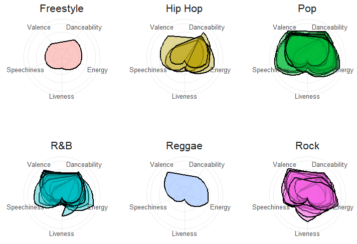

Each generation exhibits a diverse array of music genres, each with distinct characteristics such as valence, danceability, speechiness, energy, and liveness. These traits offer insight into the unique sound and feel of the music that defined each era
The Millennial era, epitomized by its music genres, exhibits a consistent trend characterized by high valence, danceability, and energy, with less emphasis on speechiness and liveness.
Analyzing the sentiment scores of the Millennial generation throughout the years offers insights into emotional trends, focusing on their minimum, maximum, and average ranges. For example, the sentiment score hit its lowest point in 1989, a year marked by economic uncertainty and geopolitical upheaval, including events like the fall of the Berlin Wall and the Tiananmen Square protests, which stirred feelings of fear and uncertainty among many Millennials. Conversely, the sentiment score peaked in 1992, a time of relative stability and optimism, characterized by the rise of the internet, the success of the grunge movement in music, and the election of Bill Clinton as President of the United States, all contributing to a sense of hope and positivity among Millennials

Within the Millennial Generation, the top three songs of the era with the highest positive sentiment scores are...
| Song | Artist | Year Released | Sentiment Score |
|---|---|---|---|
| Baby Baby Baby | TLC | 1992 | 3.00 |
| Faith | George Michael | 1988 | 2.30 |
| Because You Loved Me | Celine Dion | 1996 | 1.78 |
Within the Millennial Generation, the top three songs of the era with lowest negative sentiment scores are...
| Song | Artist | Year Released | Sentiment Score |
|---|---|---|---|
| Miss You Much | Janet Jackson | 1989 | -6.26 |
| Alone | Heart | 1987 | -0.39 |
| Careless Whisper | Wham! | 1985 | -0.31 |